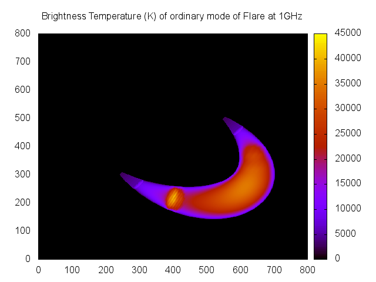
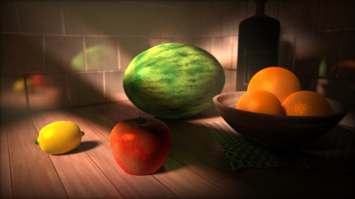

Thyr
Simulating Microwave Emission from Solar Flares
Chris Osborne (2087801)
Project Aims
Increased resolution simulation of microwave (MW) emission from flares, in particular the foot regions.
- Not resolvable by modern radio astronomy equipment.
- Produce an initial idea of what we may see.
Focus on gyrosynchrotron (GS) emission.
- First analytically described by Ramaty in 1969.
- Mildly relativistic electrons (\(\gamma \sim 5\)) spiralling through a magenetic field.
GS Simulation
- Computer simulation of GS Emission is not a new idea.
- First program produced by Ramaty in an early FORTRAN.
- We can directly trace our lineage back to that program.
Computer Simulation
- Why now?
- Modern computers are many orders of magnitude more powerful than when Ramaty wrote his original simulation.
- Can afford to be "profligate" with computational resources (within reason)
- The simulation of \(j\) and \(k\) is typically less than 50ms per frequency - on this laptop!
Design: Start with the Desired Output...

An emission map plotted in MATLAB.
Design: ...And with Prior Art

Output from PJAS' gyro3d (IDL)
Main Methods
GS Simulation as per PJAS' modified version of Ramaty's code, given a quick optimisation pass
Volumetric Raytracing
Original aim was to provide arbitrary flare geometry
- This proved harder than expected, provided highly adjustable loop instead.
- How adjustable?
Our Loop Model

Our modified torus presenting a flare shape with −20◦ lean, at latitude 30◦ and longitude 70◦. The shape also presents a 30◦ back angle and 40◦ asymmetry or inclination.
Programming Model
Extensible modular modern
C++coreInterpreted Turing-complete Lua scripting front-end.
- Acceptable speed - within factor of 5 of
Cfor double precision maths.
- Acceptable speed - within factor of 5 of
Unless modifying the software beyond its design role, most users should never have need to touch the C++.
Extensive documentation and examples for the front-end (See users manual). API reference provided for the core.
MATLAB script (available in the user's manual),
but these are also easily creatable with free software such as gnuplot, using the following
script:
set terminal pdf color
set datafile separator ","
set output "Colormap.pdf"
set key off
set xrange [0:800]
set yrange [0:800]
set title "Brightness Temperature (K) of ordinary mode of Flare at 1GHz"
plot "th.1.000000GHz.O.csv" matrix with image
This can easily be meta-programmed using bash, python, perl etc. to automatically fill in the
graph titles from the filenames, much as the MATLAB script does.
IDL also works well for this task, as does R for more in-depth statistical processing.
Sample Gnuplot output

Example
function ArcToCMSun(h)
-- DegToRad / "perDeg * AstroUnit
return math.pi / 180.0 / 3600.0 * 1.49597870e13 * h
end
function CMSunToArc(h)
return h / (math.pi / 180.0 / 3600.0 * 1.49597870e13)
end
densityScaleHeight = CMSunToArc(130e5);
kappa = 10
loopDensity = 10e9
photDensity = 1.16e17
function BMagnitude(s)
if (math.abs(s) > highResRadialPos) then
return 600 + ((20 * math.abs(s) - highResRadialPos)
/ (1- highResRadialPos))^2
else
return 200 + ((20 * math.abs(s))
/ highResRadialPos)^2
end
end
function PlasmaDensity(h)
if (h < highResHeight) then -- roughly based on Battaglia et al. ApJ 752
local nExp = loopDensity + photDensity * math.exp(-h / densityScaleHeight)
local nk = photDensity * (1 + h / (kappa * densityScaleHeight))^(-kappa + 1)
return nExp + nk
else
return 1.0e9
end
end
function Temperature(h)
if (h < highResHeight) then
return 5000 + 5000 * (h / highResHeight)
else
return 2.0e7
end
end
function NonThermalDensity(s)
return 1.0e6
end
function Delta(s)
return 4.0
end
function EnergyMinMax(s)
return 10, 5000
end
RT.SetViewportSize(25,25)
RT.AddLoop('l1')
l1.SetSolarSize(8, 2, 0.2)
l1.SetSolarLoc(0, 60, 40, 70)
l1.SetHighRes(2, 2)
l1.SetDomains(20)
RT.CullDomains()
RT.LoadFreqList('logFreqs.csv')
RT.GUpdate()
RT.SaveAllCSVs('flare1')
Interface

Interface
- Previous slide showed interactive interface.
- Can also be run with pre-written scripts.
Demonstration
Current Failings
Raycasting against large number of domains
- Currently \(O(N^3)\), could be \(O(N\log(N))\) using octree sorting.
- Time to implement: < 7 days.
- Look at Ogre3D/Urho3D/my Lethani for source inspiration.
Alternative: Replace current domain system with something like BSP
- Time to implement $\sim$1 month. See Quake/Unreal Engine source.
Current Failings
- Only single power law electron distribution available in Lua.
- The back-end is already in place for multi-power law, we just need a way to link the two.
- Time to implement: < 3 days.
Current Failings - A comment
The most time-consuming part of the GS simulation is the Bessel function calculations. These are responsible for peaks in the emission spectrum, however it may be a good idea to use an interpolation scheme depending on the precision that is actually required.
Investigation required.
Possible Future Extensions
Other geometry types
- The algorithms used are applicable to any shape - if it can't be parametrised directly, then we can use polygons.
- Time to implement: $\sim$2 weeks. See raytracers (e.g. POVRay).
Other frequency ranges
- If \(j\) and \(k\) can be calculated for the cloud/plasma, we can use it.
- Should be a fairly minor modification < 10 days to add a second frequency range (e.g. EUV), faster from there.
The above would require slight modifications of currently hard-coded constants if non-solar bodies were to be analysed.
Possible Future Extensions
- Allowing the user to define different functions per flare in the multi-loop case.
- Time to implement: < 4 days
Possible Future Extensions
- Modern raytracing techniques (raymarching)
- These techniques could massively increase the resolution and complexity of shapes while improving speed and decreasing memory usage (GPGPU).
- Time to implement: Probably at least 2 months.
Raymarching

Made by Íñgo Quílez, using a 4KB binary, no external files, renders on a 4 year old GPU in near real time.
Interesting developments
- A more in-depth survey of the possible variations of parameters that could lead to heavy GS emission from the flare foot points (and estimating its magnitude)
- Presumably a combination of high density with increased temperature relative to the chromosphere.
Interesting developments
- Reanalysing the situation set up in (Simões & Costa 2006) using a multi-loop model with more accurate chromospheric and coronal temperature and density models. Hopefully allowing a direct comparision to NoRH and RHESSI data, thus confirming the validity of the models.
Acknowledgements
I would like to thank Dr. Simões (my advisor), and the University of Glasgow Astronomy department for supporting me and funding this project. I also wish to thank all the coders whose previous work has been invaluable.
Please also see the user's manual and my summer report.
Questions?